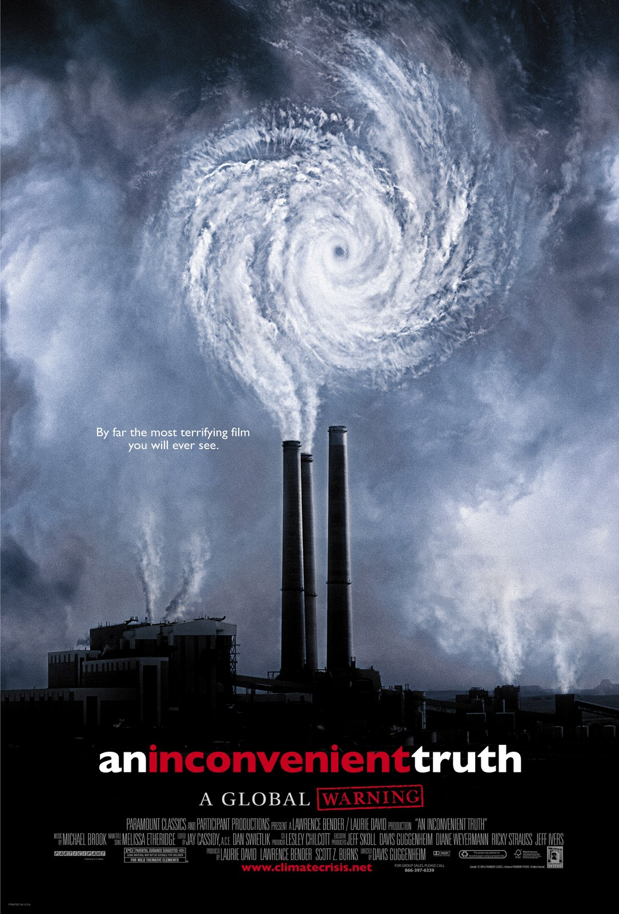
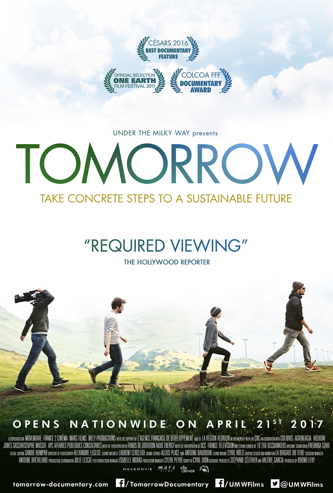
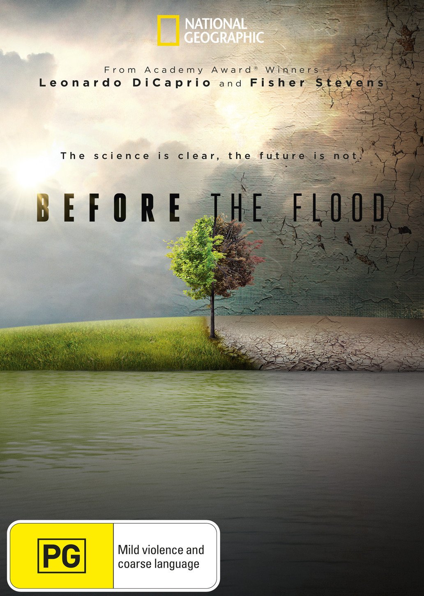
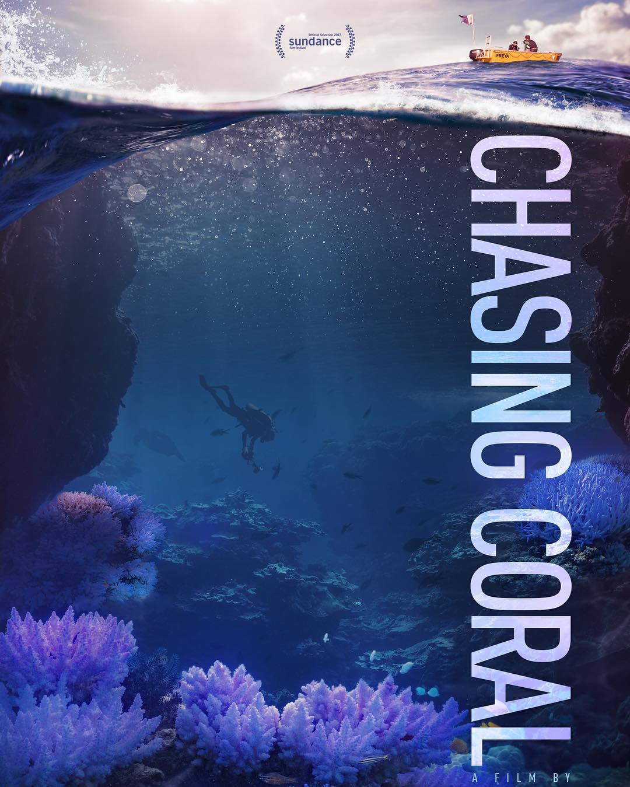
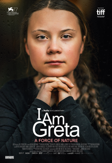
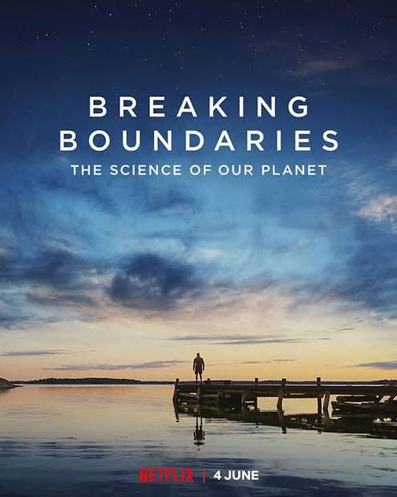

An Incovenient Truth (2006)
Film ini menceritakan dengan jelas bagaimana pemanasan global menjadi fenomena luar biasa yang membuat bumi sebagai tempat tinggal segala makhluk menjadi terancam. An Inconvenient Truth menggambarkan sisi lain Al Gore tentang kepeduliannya terhadap lingkungan.
 TEASERTomorrow (2015)
Dihadapkan dengan masa depan yang menurut para ilmuwan merupakan penyebab keprihatinan yang besar, film ini memiliki perbedaan untuk tidak menyerah pada bencana. Secara optimis, ini mengidentifikasi inisiatif yang telah membuktikan diri di sepuluh negara di seluruh dunia, contoh nyata solusi untuk tantangan lingkungan dan sosial abad kedua puluh satu, baik itu pertanian, energi, ekonomi, pendidikan dan pemerintahan.
 TEASERBefore the Flood (2010)
Menceritakan perjalanan Leonardo DiCaprio sebagai messenger of peace tentang perubahan iklim. Selama perjalanannya DiCaprio mengunjungi beberapa wilayah, bertemu dengan para ahli, ilmuan, politikus, aktifis, dan orang-orang yang mempunyai peran dalam penanggulangan perubahan iklim.
 TEASERChasing Coral (2017)
Film dokumenter yang dirilis pada 2017 ini akan membawa Anda untuk melihat perubahan menyedihkan yang terjadi di dasar laut. Film besutan Jeff Orlowski ini mengisahkan populasi terumbu karang dunia yang kini mengalami pemutihan massal dan sekarat.
 TEASERI am Greta (2020)
Kisah Greta Thunberg menceritakan bagaimana seorang anak yang kesepian dan bermasalah menemukan kekuatan tersembunyi dalam dirinya. Sungguh petualangan yang luar biasa. Thunberg sendiri berkata ceritanya bisa dijadikan film tapi akan menjadi film yang sureal "karena plotnya akan begitu sulit dipercaya"
 TEASERBreaking Boundaries : The Science of our Planet
Film ini bercerita tentang penemuan ilmiah bahwa umat manusia telah mendorong Bumi melampaui batas yang membuat planet ini tetap stabil selama 10 ribu tahun. Sebagai ilmuwan, Johan Rockstrom juga menawarkan solusi yang dapat kita terapkan untuk melindungi sistem pendukung kehidupan di Bumi.
 TEASER